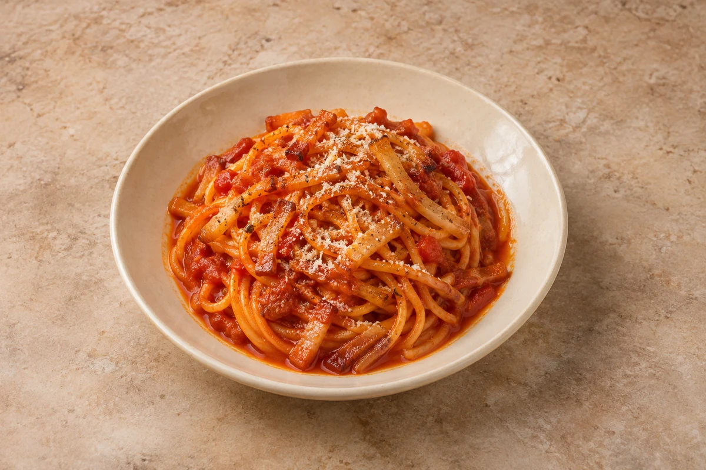

Pasta
Spaghetti all’Amatriciana
Spaghetti coated in a rich tomato sauce with crisp guanciale, a little chilli and Pecorino Romano.
Estimated total: About 30 min totalPrep 5 min; cook 25 min. Cook the pasta while the sauce simmers.
people
Ingredient quantities update automatically

Ingredients
Method
- Put the guanciale in a cold, wide frying pan. Cook over a medium-low heat for 8–10 minutes, stirring occasionally, until golden and crisp and the fat has rendered. Transfer it to a plate, leaving approximately 1½ tbsp fat in the pan.
- Add the chilli flakes to the fat and stir for 20 seconds. Pour in the wine and simmer for 1–2 minutes, scraping up the browned bits.
- Add the crushed tomatoes and black pepper. Simmer gently, uncovered, for 12–15 minutes, stirring occasionally, until thickened but still saucy.
- Meanwhile, cook the spaghetti in lightly salted boiling water until 1 minute short of the packet’s cooking time. Reserve a mugful of cooking water before draining.
- Return most of the guanciale to the sauce. Add the spaghetti and 50ml pasta water, then toss over a medium heat for 1–2 minutes. Add more pasta water a splash at a time until the sauce generously coats the pasta.
- Remove from the heat. Toss through 30g Pecorino, loosening with another splash of pasta water if needed. Taste before adding salt. Divide between bowls and finish with the remaining cheese and guanciale.
The heat from the pasta cooks the eggs — do not overcook or it will scramble.
Tips & leftovers
Storage & leftovers
Cool promptly, refrigerate covered within 2 hours and eat within 48 hours.
Freezing
Freeze the cooled sauce separately for best texture, then defrost fully in the fridge and use within 24 hours. Cook fresh pasta when serving.
Reheating
Add a splash of water and reheat once until steaming hot throughout, stirring well. Add freshly cooked pasta to thawed, reheated sauce.
Substitutions
Pancetta can replace guanciale; Parmesan can replace Pecorino, with a milder result. Replace the wine with 50ml water if preferred.
Keeping leftovers safe
Cool cooked leftovers in small portions and refrigerate within 2 hours. Keep the fridge at 0–5°C and the freezer around −18°C. Freeze suitable leftovers promptly. Defrost fully in the fridge and use within 24 hours. Reheat only once, until steaming hot all the way through. Follow any shorter use-by or opened-pack instructions; using older cooked ingredients does not restart their storage time.
Food-safety guidance: Food Standards Agency: chilling and freezing · reheating leftovers.